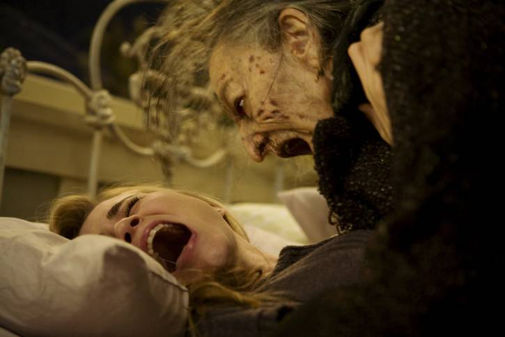
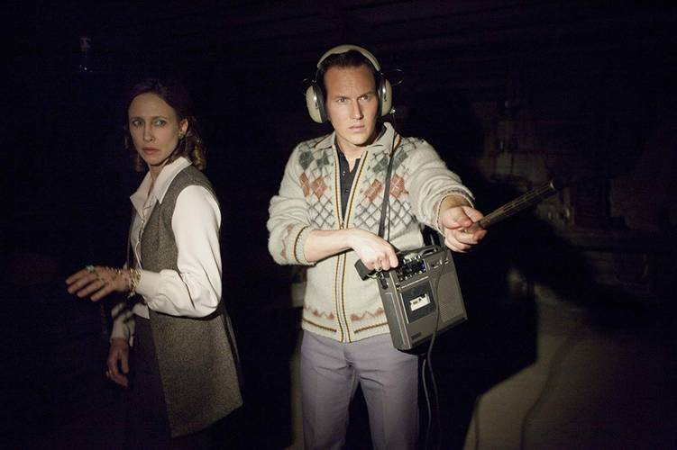

By: TerrorFlix
Em uma fazenda no século 17, uma histeria religiosa toma conta de uma família que acusa a filha mais velha pelo desaparecimento do seu irmão ainda bebê.
Uma atriz vai gradativamente tomando consciência de que a sua filha de doze anos está tendo um comportamento completamente assustador. Deste modo, ela pede ajuda a um padre, que também é um psiquiatra, e este chega a conclusão de que a garota está possuída pelo demônio. Ele solicita então a ajuda de um segundo sacerdote, especialista em exorcismo, para tentar livrar a menina desta terrível possessão.
A vida de uma bancária começa a mudar quando, para impressionar seu chefe, ela nega o pedido de prorrogação do prazo de pagamento das prestações da casa de uma idosa.
Os investigadores paranormais Ed e Lorraine Warren trabalham para ajudar a família aterrorizada por uma entidade demoníaca em sua fazenda.
Amelia, viúva e ainda atormentada pela violenta morte do marido, tenta lidar com o medo de monstros que aterroriza seu único filho, o pequeno rebelde Samuel, e enfrenta dificuldades em amar o garoto. Após encontrar um misterioso livro, o menino, certo de que há um monstro que deseja matá-lo, começa a agir irracionalmente para o desespero de sua mãe. Mas logo Amelia percebe que realmente há uma sinistra presença na casa e ao redor deles.
Uma jovem e talentosa agente do FBI é aconselhada pelo Dr. Hannibal Lecter, um psiquiatra brilhante e também um psicopata violento e canibal, a fim de conseguir capturar outro assassino
Um grupo de adolescentes tem pesadelos horríveis, em que são atacados por um homem deformado com garras de aço. Ele apenas aparece durante o sono e, para escapar, é preciso acordar. Os crimes vão ocorrendo seguidamente, até que se descobre que o ser misterioso é na verdade Freddy Krueger, um homem que molestou crianças na rua Elm e que foi queimado vivo pela vizinhança. Agora, Krueger pode ter retornado para se vingar daqueles que o mataram, através do sono
Um jovem fotógrafo descobre um segredo sombrio quando conhece os pais aparentemente amigáveis da sua namorada.
Na remota Antártida, um grupo de cientistas americanos é perturbado em sua base quando, de um helicóptero, alguém atira em um cão do acampamento. À medida que socorrem o cão baleado, o bicho começa a atacar os cientistas e os outros cachorros e logo eles descobrem que o animal pode assumir a forma de suas vítimas. Isto significa que membros da equipe podem ser mortos e a cópia assumir o lugar deles. Com isso, um piloto e um médico precisam capturar a fera antes que seja tarde demais.